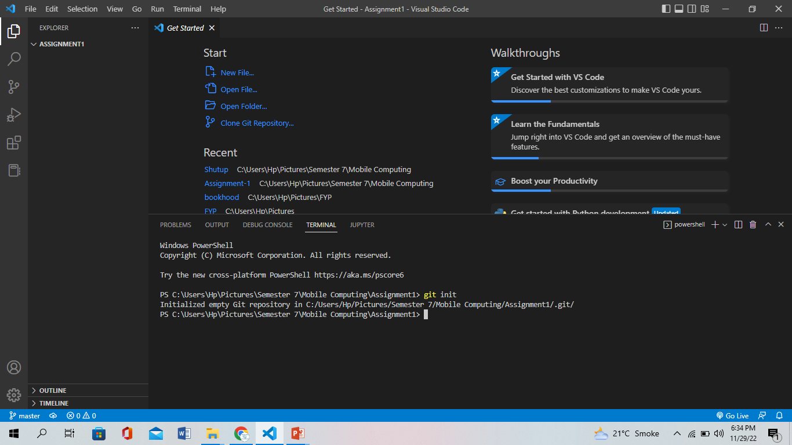
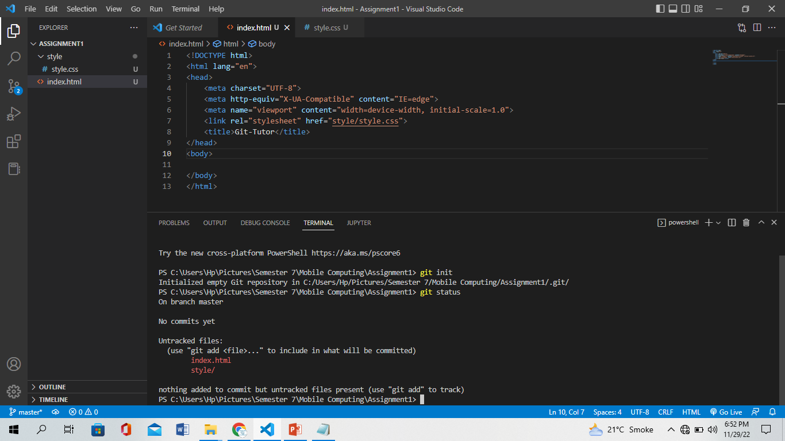
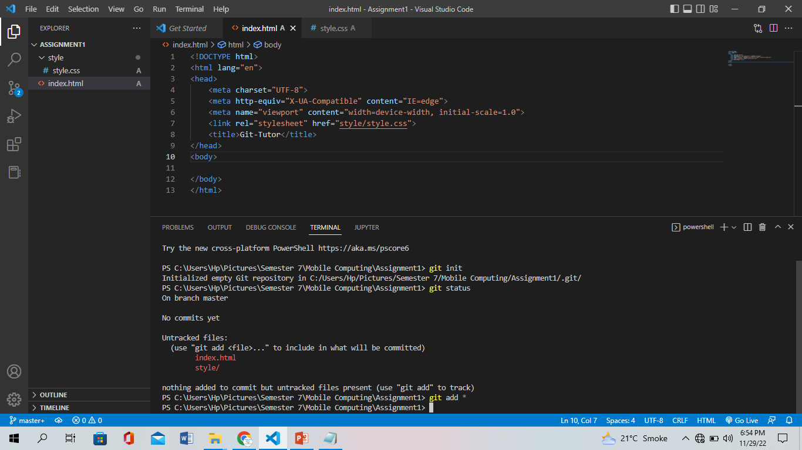

GitHub is a code hosting platform for version control and collaboration. It lets you and others work together on projects from anywhere.

CREATE ACCOUNT & DOWNLOAD GIT
GITHUB account is necessary for every user. Without account you cannot make your own repository

If you have not install git then Download it because GitHub will not work without this.
COMMAND
1. git init
The command "git init" is to intialize a new local GitHub repository. It creates the .git repository folder.
2. git status
The "git status" commmand is used to find out all untracked files. It will display the all the local files which are modified and not commited.
3. git add
The "git add" commmand is used to add all the untracked files to a staging area. All the new, modified and deleted files (untracked files) are added to git staging area.